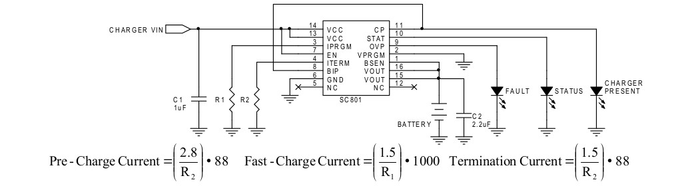
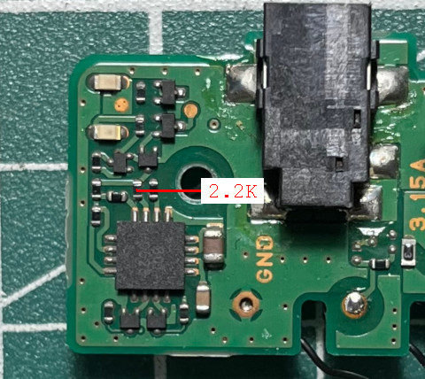
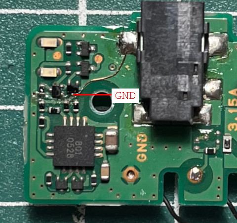

微電腦 - SHARP Zaurus SL-C3200 - 解決充電太慢的問題
依據SC801手冊，FastCharge充電電流是由第三腳位的IPRGM電阻決定：

司徒量測了一下IPRGM電阻，使用的是2.2K電阻，因此，FastCharge充電電流大約是680mA，不過，仔細一看，它並不是直接接地，而是還有一顆未知的三隻腳位的元件控制，司徒翻了一下Kernel程式碼，沒有發現任何資訊，這個可能就是導致充電過慢的問題

司徒繞過這個控制元件，直接將2.2K電阻接地，這樣就可以達到最佳的充電電流680mA
